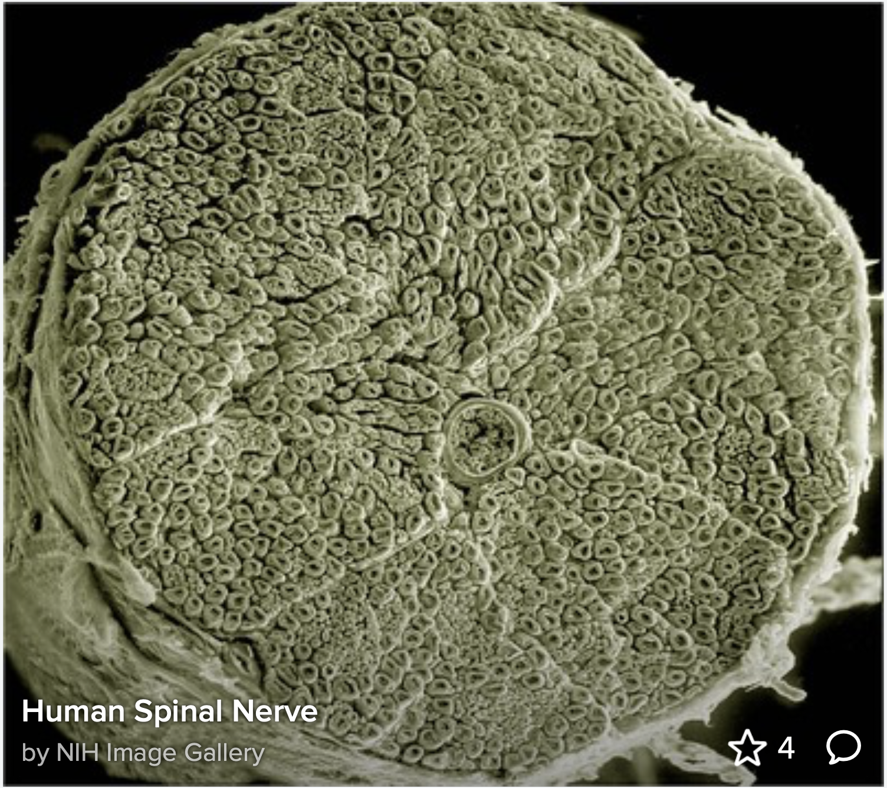

What Chose the Thought?
Before we explain consciousness, we should ask what an explanation would actually have to explain.
Ok I'm going to ask you to do some mental tasks.
Picture yourself sitting in the bed of your childhood bedroom.
Now imagine yourself standing somewhere you’ve never been.
Now think of a time you felt extremely embarrassed.
Now sing happy birthday to the person you love most.
Now lift your finger.
Now blink twice.
Ok.
What chose each one?
In this essayJump to a section
TL;DRQuick summary
Your brain changes physically when you remember, imagine, decide or move. But describing the physical changes that accompany a thought is not necessarily the same thing as explaining why that particular thought occurred.
This essay asks a narrower question than whether neuroscience is right or wrong: does describing the machinery of thought explain the chooser, the experience or the seemingly enormous space of thoughts a human being can voluntarily generate?
Before reducing consciousness to chemistry, we should establish what a chemical explanation would actually have to explain.
I. What Chose the Thought?
We're told that our thoughts are sent via neurotransmitters, little chemical signals in the brain that control the path of electrical signals.
But if chemistry generated the thought, what directed the chemistry toward that exact memory, image or movement?
If i asked you to come up with a story right now that no one else has ever thought of before, could you do it? if i asked a million people to write stories that were one of a kind, how many would be identical? if our imagination is seemingly infinite how could consciousness ever be chemical? If our minds were products of matter, how is it that we are capable of imagining things beyond what already exists?
If I ask you to envision yourself in your childhood bedroom, then to imagine yourself in the most peaceful place, to think back to one of your most embarrassing moments, then to wiggle your fingers - what is doing all of that?
If chemical reactions are triggering these specific thought pathways, what is the force triggering them to occur? What is controlling the pathway of thought?
The brain clearly undergoes measurable physical changes during thought. The question is whether tracing those physical events completely explains why this particular conscious content appeared, why it was experienced from a first-person perspective and how voluntary selection should be understood.
Neural activity, neurotransmitter release, electrical potentials, network activation, sensory input, memory retrieval and motor output can all be studied.
The unresolved question is whether a complete physical description of those processes would also constitute a complete explanation of subjective experience and voluntary thought.
A materialist explanation would argue that no additional force is required: the apparent chooser is itself an activity of the nervous system produced by prior neural states, memory, attention and other physical processes.
The challenge for this essay is therefore not merely to point to unexplained neural activity, but to ask whether explaining every mechanism would also explain the experience of choosing.
II. Where Was the Thought Before You Thought It?
Where was all that information stored before you consciously chose to have that thought?
With billions of neuronal pathways and new ones made daily, how do chemicals which exist ubiquitously across the brain make sure that specific thought pathways occur over others?
How could such finite, inert chemicals be the source of such infinite thinking potential?
How are you capable of choosing what to think and choosing exactly when and how you move?
You summoned those thoughts without any new external information telling your brain which one to produce. Something is generating these outcomes. The question is whether describing the molecules involved is the same thing as explaining what selected the outcome.
We can see the physical pathways. We can watch activity move through them. We can measure electrical potentials, chemical concentrations and changes in activity.
But imagine knowing the position and activity of every nerve fiber in the image above.
Would the image tell you whether the person was remembering their mother, imagining a place that has never existed or deciding to lift one finger?

The existence of the wiring isn't in dispute.
The question is what the wiring explains.
Describing the machinery that accompanies a thought is not necessarily the same thing as explaining why that thought exists.
A description can identify the structures involved in memory retrieval, imagination, attention and movement without automatically settling the philosophical question of why those physical processes are accompanied by subjective experience.
Correlation asks which physical events occur with an experience. Mechanism asks how those physical events produce an outcome. The deeper consciousness question asks why any of those events should be accompanied by an experienced inner world at all.
The objection: Increasingly complete neuroscience may eventually show that the distinction is unnecessary. What we call choosing, imagining and remembering may simply be what sufficiently complex neural activity feels like from inside the system.
Response: That is a possible explanation, but it remains an explanatory position rather than something established merely by observing neural correlates. The purpose of the question is to keep the distinction visible.
Dig deeperThe problem of subjective experience
Imagine that every physical event in your brain during the childhood-bedroom experiment could be recorded with perfect precision. We could know which neurons fired, which synapses changed, which neurotransmitters were released and which muscles eventually moved.
We would possess an extraordinarily detailed description of what your nervous system did. The philosophical question is whether that description would contain the actual experience of remembering the room, feeling the embarrassment or hearing the song internally.
III. The Limits of the Chemical Explanation
The idea that "cells are just mindless chemical machines" isn’t a scientific conclusion reached through observation and testing.
By excluding non-measurable reality from its domain, modern science created a framework that excels at manipulating physical matter, but is incapable of considering the importance of consciousness in the body.
Modern experimental science deliberately privileges observations that can be measured, tested and independently investigated. That restriction is one of the reasons it is so powerful.
But consciousness creates an unusual problem because the thing being studied includes first-person experience. Another person can measure my brain, behavior and words. They cannot directly occupy my experience.
This does not by itself establish that consciousness exists separately from matter.
It establishes a narrower epistemological problem: a method optimized for third-person measurement encounters a unique difficulty when the phenomenon under investigation includes first-person experience.
The objection: Science does not need direct access to another person's consciousness. Subjective states can be investigated through reports, behavior, neural activity and experimentally controlled changes to the brain.
Response: Those methods can establish increasingly precise relationships between brain and experience. The remaining question is whether the relationships constitute a complete explanation of experience itself.
Would a complete map of every neural event occurring while someone experiences grief constitute a complete description of grief?
By demanding that every truth be repeatable, science redefined the universe as that which can be replicated, erasing the unrepeatable essence of life.
Think about the problem from the opposite direction.
You can repeat an experiment involving a molecule. You can reproduce a measurement. You can manufacture another object with the same dimensions.
But you cannot reproduce this exact conscious moment.
You cannot reproduce one person's entire perspective, memory, history, relationships, imagination and experience inside another person.
And yet those unrepeatable things may be among the most consequential things that exist.
IV. The Difference Between Living and Inert Matter
This isn't a new problem.
Long before anyone reading this was born, scientists were already asking whether the processes of life could actually be reduced to physics and chemistry.
The question never disappeared.
We just stopped hearing it asked very often.
There is a difference between describing the matter that makes up a living system and explaining the living state itself.
Physics and chemistry describe an enormous amount about the components and processes of organisms. The deeper question is whether a sufficiently complete account of those components necessarily exhausts everything that needs to be explained about life and consciousness.
Scientists and philosophers have repeatedly debated whether life can be understood entirely through the laws used to describe nonliving matter, or whether organization, information, emergence or other principles require additional levels of explanation.
1967: The American Association for the Advancement of Science published the symposium Do Life Processes Transcend Physics and Chemistry?, explicitly addressing whether biological and psychological phenomena could ultimately be reduced to physical explanation.
2012: The inert vs. the living state of matter: extended criticality, time geometry, anti-entropy – an overview examined theoretical differences between inert matter and living systems and argued for theoretical tools capable of making biological organization intelligible.
The objection: The fact that life is extraordinarily complicated does not demonstrate the existence of a separate life force or nonphysical cause. Complexity and emergent organization may arise entirely from physical processes.
Response: Correct. Complexity alone cannot establish a nonphysical explanation. The question being preserved here is whether reduction to components has actually explained the phenomena, rather than assuming in advance that it eventually will.
This is the distinction I want to keep open as we continue.
Not whether chemistry exists.
Not whether neurons matter.
Not whether changing the brain can change consciousness.
Obviously it can.
The question is whether the physical description is the whole description.
Dig deeperBioelectricity and biological organization
Electrical activity is not foreign to biology. Nervous systems, muscles, development and tissue organization all involve electrical phenomena alongside chemical signaling.
Robert O. Becker's The Body Electric explored bioelectric phenomena in healing and regeneration. Later essays will examine whether bioelectric organization changes how we should think about the relationship between chemistry, structure and the living whole.
Challenge this ideaThe strongest counterargument
The objection
None of the thought experiments in this essay require a nonphysical cause. Memories, imagination, decisions and voluntary movement may all emerge from the activity of a sufficiently complex nervous system. The fact that we do not yet possess a complete mechanistic account of consciousness does not mean such an account is impossible.
Response
That's exactly why the question should remain open. An unexplained phenomenon is not evidence for any particular alternative theory, but neither is the expectation of a future physical explanation evidence that the physical explanation is complete. The purpose of this essay is to establish what must actually be explained before deciding which theory explains it.
What would change my mind
A theory capable of deriving specific conscious content, first-person experience and voluntary selection from physical states alone rather than merely correlating those states with reported experience would substantially weaken the distinction being made here.
Questions for further thoughtContinue thinking
If you could watch every molecule in your brain while you remembered your childhood bedroom, at what point in the description would the actual image you experienced appear?
If two brains produced different thoughts from the same question, what determined the difference?
What evidence would distinguish a brain that generates consciousness from a brain that participates in or receives consciousness?